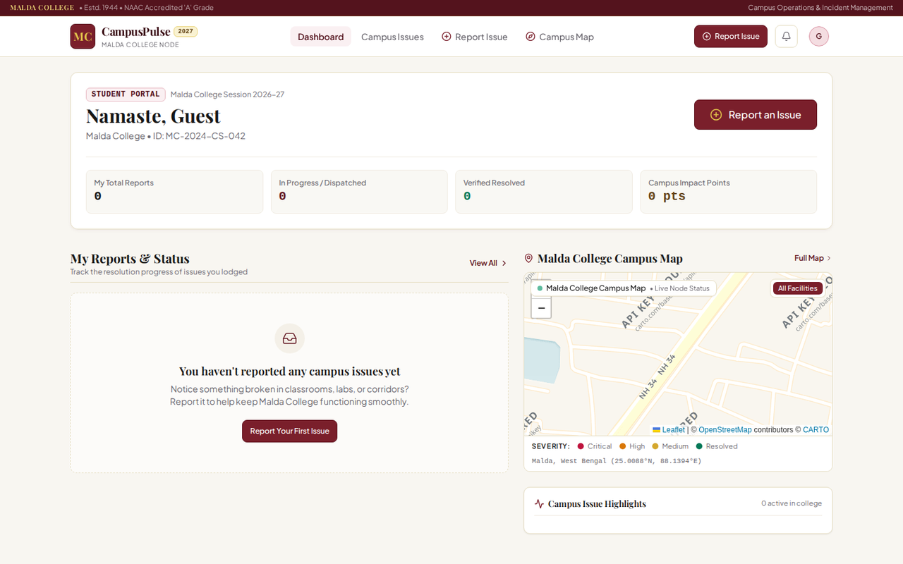
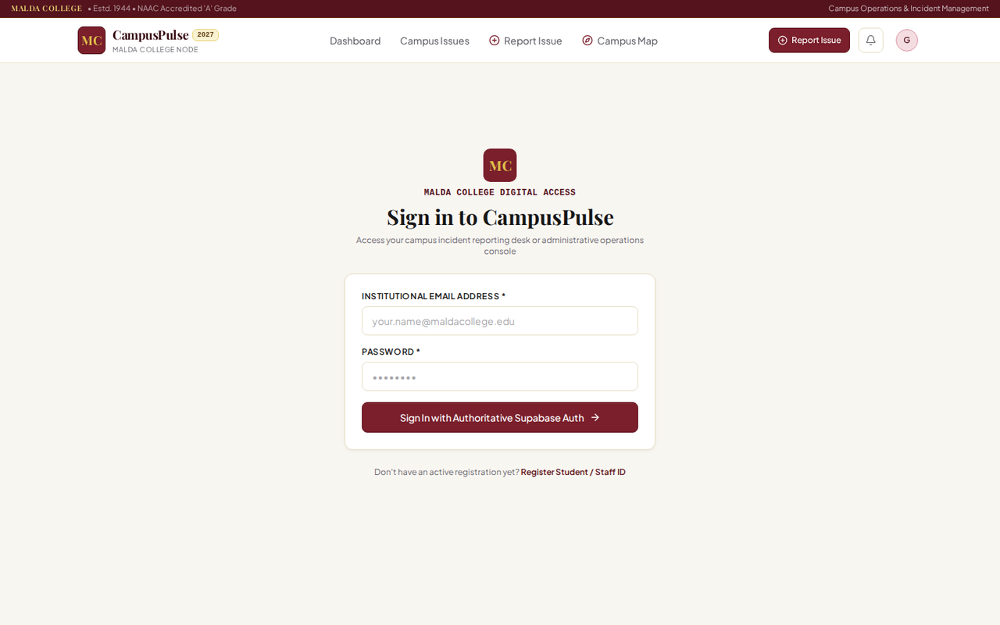
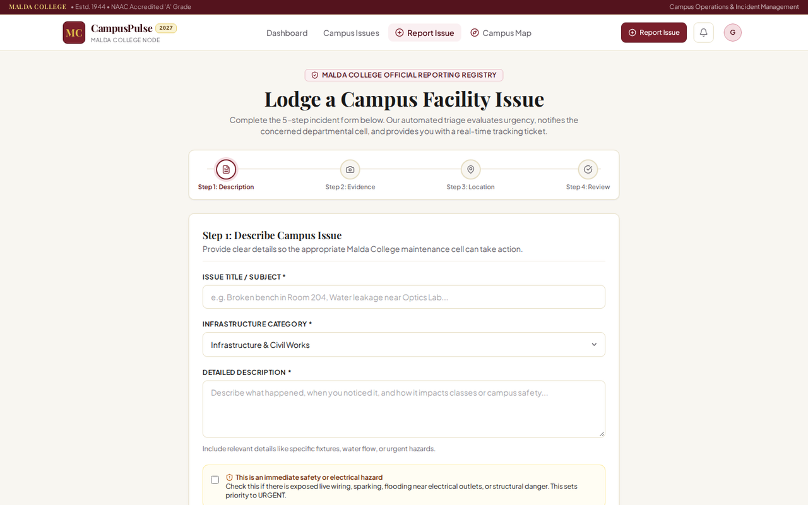

MaldaOS
Campus Operations & Issue Resolution Platform with Supabase RLS, role-based workflows, AI triage, audit logging and 3D campus visualization.
All numbers measured from the repository on 2026-09-13: 17 page.tsx files + 1 route.ts; 165 passing tests across 6 frontend files (7th file needs a live Supabase stack); 33 passing ai-gateway tests; 53 CREATE POLICY + 27 CREATE FUNCTION statements across 8 migrations. No live public demo — runs against a local Supabase stack.
01 — Problem
Campus issues — broken infrastructure, maintenance requests, safety hazards — get reported through informal channels, get lost, and leave no verifiable resolution trail. Students can't answer "what did I report, what's happening with it"; staff have no dispatch queue; nobody can audit what changed.
02 — Solution & Architecture
An institutional command ledger. Students file structured 4-step reports (description → evidence → location → review with AI advisory) and get a deterministic MC- ticket reference. Department staff receive dispatched work orders; super-admins get a command console with health scoring, analytics, GIS map and audit trail.
src/app/ — 17 pages: /, login, register, dashboard, issues, issues/[id],
report, profile, map, admin ×8
src/app/api/ai/analyze/route.ts — server-side AI triage (keys never hit the client)
ai-gateway/ — Groq → OpenRouter → NVIDIA → Google → deterministic fallback
campus-pulse-backend/supabase/migrations/ — 8 migrations: schema, helpers,
RPCs, RLS, storage triggers, auth trigger, geo visibility, insert guard
middleware.ts — server-side /admin/* gate (session + DB role)Route map (actual): /, /login, /register, /dashboard, /issues, /issues/[id], /report, /profile, /map, /admin, /admin/issues, /admin/assignments, /admin/map, /admin/analytics, /admin/insights, /admin/audit, /admin/settings, /api/ai/analyze.
Screenshots — real product



Screenshots are Playwright captures from the MaldaOS repo (playwright-screenshots/), resized to max 1280px for the web.
03 — Engineering challenges
How do you stop students modifying another student's issue?
Supabase RLS + SECURITY DEFINER RPC + database role enforcement. Roles come from profiles.role — never browser metadata. Direct table mutations are blocked by guard triggers; seeded demo logins are hard-blocked in production and eliminated from the client bundle at build time.
How do you keep AI triage honest?
AI output is advisory-only (category, severity, priority, summary, confidence) that a human accepts or rejects. Provider keys are server-only. The deterministic fallback is always labelled and the core report → assign → resolve → verify workflow works with zero providers configured.
How is every action verifiable?
Database-enforced transitions (transition_issue_status / assign_issue RPCs) with a 7-day student reopen window; every mutation writes to audit_logs, viewable at /admin/audit with CSV export.
04 — Security
- 53 RLS policies incl. private storage buckets served via short-lived signed URLs only
- 27 RPC functions (SECURITY DEFINER) — the only path for privileged writes
- Fail-closed mock mode: can never activate in production builds, regardless of env flags or client tampering
- Student endorsement limited to one vote per student per issue, enforced in the database
05 — Testing
- 165 passing frontend tests across 6 files (guards, journeys, admin ops, accessibility) — run:
npx vitest run - 33 passing ai-gateway tests (config, deterministic fallback, features, gateway, validation) — run:
npm testinai-gateway/ - Backend RLS/integration suites run against an ephemeral Supabase stack in CI
- CI jobs: frontend (lint · typecheck · build · guards), AI gateway (build · lint · tests), backend (migrations + RLS tests)
- Scope note: the 7th frontend file (12 runtime tests) requires a live local Supabase stack and is excluded from the 165 count
06 — Result
A production-quality campus operations platform: governed issue lifecycle, advisory AI triage, command console with live health scoring, 3D + 2D campus maps, full audit trail — with security and test evidence a reviewer can verify in the repo instead of taking on trust.